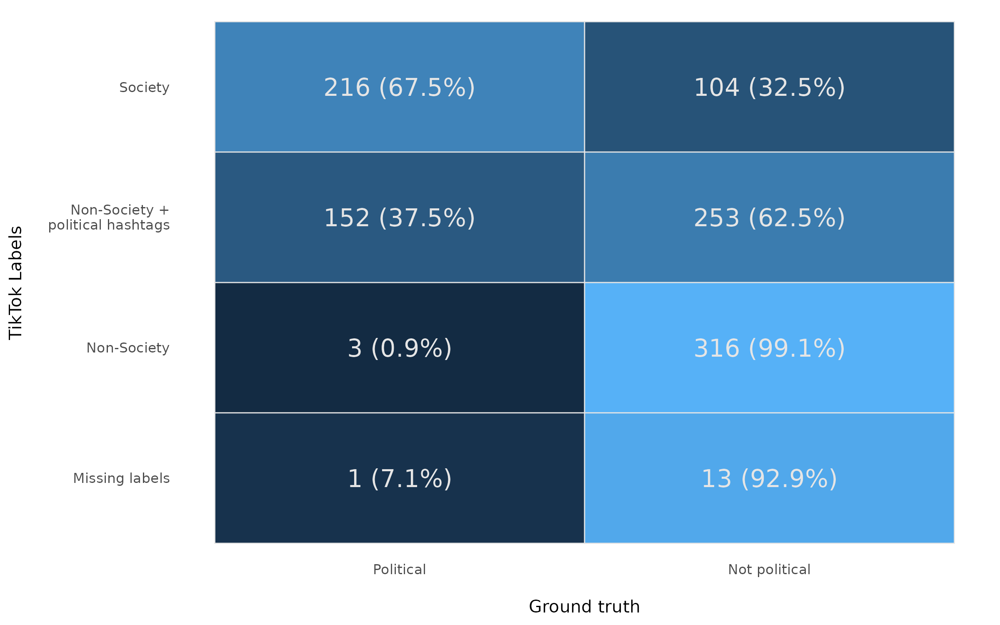

Quand TikTok et les algorithmes redessinent la démocratie
Colloque des Sciences humaines — CEGEP Ahuntsic
15 avril 2026
▶ TikTok — @miko.deschamps
La marche du progrès : Hier
Le Téléjournal — Radio-Canada
La marche du progrès : Aujourd’hui
▶ TikTok — @alexxplique
Qui suis-je ?
Fonctions
- Professeur adjoint de science sociale computationnelle (ULaval)
- Chercheur affilié au Centre d’étude politique des réseaux sociaux et de l’IA à NYU
- Précédemment : PhD à Konstanz (Allemagne), Ingénieur de recherche chez Meta
Intérêts de recherche
- Technologie et politique
- Représentation démocratique
- Science des données
TikTok et Démocratie — Ce que vous allez retenir
- Les médias jouent un rôle central pour la démocratie
- TikTok transforme tant la nature de l’information politique que les mécanismes dictant sa circulation
- Étudier scientifiquement TikTok requiert à la fois des compétences techniques informatiques et des compétences d’analyse sociale
Plan
📰
Acte 1 — Comment les médias façonnent la démocratie ?
Pourquoi les médias conditionnent la qualité démocratique.
📱
Acte 2 — Ce que TikTok change
Nouveau format, nouveau rôle algorithmique, nouveau type de contenu politique.
🔬
Acte 3 — Comment étudier scientifiquement TikTok ?
Sélection des cas et méthodes computationnelles.
📊
Acte 4 — L'offre politique sur TikTok aux États-Unis
Premiers résultats d'une étude en cours.
Deux fonctions des médias
Faire circuler une information de qualité
Attentionnelle
Distribuer notre attention entre sujets et acteurs
TikTok transforme les deux.
« Les médias ne nous disent pas quoi penser, mais ils sont remarquablement efficaces pour nous dire à quoi penser. » — Bernard Cohen, 1963
Un écosystème médiatique idéal ?
- Cohérent — une réalité commune partagée
- Pluraliste et inclusif — une diversité de voix
- Fiable — on peut remonter à la source
- Accessible — tout le monde peut y accéder
Récapitulatif 1
- Médias = lunettes de la démocratie
- Deux fonctions : informer + distribuer l’attention
- Un bon écosystème : cohérent, pluraliste et inclusif, fiable, accessible
→ Qu’est-ce que TikTok change ?
Acte 2 : Ce que TikTok change
Est-ce que TikTok est si important pour la politique ?
Pour les jeunes, les lunettes démocratiques
sont de plus en plus celles contrôlées par TikTok.
TikTok en 3 caractéristiques
📹
Vidéo verticale
Pas de texte
⏱️
Format court
≤ 60 secondes
🧠
Recommandation algorithmique
La plateforme
choisit, pas vous
Trois choses qui, ensemble, changent tout.
Algorithme de recommandation
Algorithme de recommandation = un programme qui décide, pour chaque utilisateur, quelles vidéos montrer et dans quel ordre.
Sur Facebook, on voyait ce que produisaient nos « amis ».
Sur TikTok, on voit ce qui nous intéresse, tels qu’interprétés par la plateforme.
Conséquences immédiates
- Contenus plus addictifs
- Prime au sensationnel (3 secondes pour accrocher)
- La plateforme régule l’attention et contrôle qui et quoi est visible
- Les producteurs se soumettent au diktat de la plateforme
« On construit une dystopie juste pour faire cliquer les gens sur des pubs. » — Zeynep Tufekci, 2017
Est-ce que TikTok favorise la démocratie ?
| Coût de production faible |
Nouvelles voix, inclusivité |
Pas de déontologie |
| Algorithme choisit pour vous |
Découverte hors de sa bulle |
Manipulation possible |
| Format court + viralité |
Démocratisation de l'engagement |
Désinformation, sensationnel |
| Divertissement + politique |
Élargit le public politisé |
Cycles d'info accélérés |
Récapitulatif acte 2
- TikTok transforme production, distribution, réception de l’information politique
- Beaucoup d’affirmations circulent…
Une seule transformation aux effets hypothétiques flous
Mythes médiatiques sur TikTok
Sciences sociales computationnelles
Notre travail en 3 temps
- Construire un narratif cohérent (argument théorique)
- Le traduire en observations testables
- Collecter les données pour valider ou infirmer
Un exemple
Question : Est-ce que le gouvernement chinois manipule l’algorithme ?
- Narratif : S’il en a la possibilité, il a en réalité intérêt à restreindre les manipulations au strict minimum
- Observation testable : Les contenus anti-PCC obtiennent le même engagement que les contenus pro-PCC
- Test empirique : TBD
Pourquoi TikTok et pas les autres ?
Logique de sélection des cas : TikTok comme exemple des plateformes modernes
- Pionnière imitée par les autres
- Adoption massive
- Importance publique due aux liens avec la Chine
Ce qu’on apprend sur TikTok éclaire aussi Instagram, YouTube, Snapchat.
Théorie vs. empirie
- Construire une théorie requiert peu de moyens (une feuille et un crayon)
- Souvent, c’est tester la théorie qui est très compliqué
Deux défis majeurs :
- Collecter les données
- Mesurer les concepts clés
Défi 1 — Obtenir les données
| Sciences sociales traditionnelles |
% de Montréalais en faveur de la régulation des loyers |
Sondage aléatoire |
Données du recensement |
| Plateformes numériques |
% de vidéos politiques au Québec |
Catégorisation d'un échantillon aléatoire |
❌ PAS de recensement |
Défi 1 : la méthode d’énumération
Chaque TikTok est associé à un très grand nombre, qui croît avec le temps.
https://www.tiktok.com/@hugodecrypte.quebec/video/7552956822462680342
- Stratégie : tester chaque nombre possible
- De cette façon, on recense l’ensemble des TikTok produits sur la planète
- Résultat : un catalogue quasi-complet de la production mondiale
Défi 1 : collecte quotidienne

Pour des raisons techniques, le recensement n’est pas complet, mais représente un échantillon aléatoire d’environ 80 %.
Défi 1 : et après ?

Obtenir les données n’est qu’un des deux défis.
Une fois collectées, il s’agit de les analyser — ce qui requiert des instruments de mesure.
Défi 2 : mesurer
Obtenir les données n’est qu’un premier défi.
- 📏 Longueur d’un meuble ? → Ruban à mesurer
- 💰 Revenu médian ? → Données fiscales
- 🧪 pH acide/basique ? → Test de pH
 Caractère politique d’une vidéo TikTok ? → ❓❓❓
Caractère politique d’une vidéo TikTok ? → ❓❓❓
On doit construire l’instrument de mesure avant de pouvoir analyser.
Défi de mesure 1 — Contenu politique
Trad-wife
▶ TikTok — @ivyoutwest
Défi de mesure 1 — Dogwhistle
Dogwhistle
▶ TikTok — @santacruzpaleo
Défi de mesure 2 — Orientation idéologique
Description ≠ contenu
▶ TikTok — @meidastouch
Défi de mesure 3 — Le bannissement furtif
Shadowbanning
Technique de modération visant à beaucoup moins diffuser une vidéo sans notifier le producteur.
Problème : L’invisibilité du phénomène rend la mesure presque impossible.
Prouver un shadowban = prouver une absence.
Notre solution : Modéliser le trajet attendu d’une vidéo et le comparer au trajet observé.
Défi de mesure 3 — Le bannissement furtif

Défi de mesure 3 — Le bannissement furtif

Défi de mesure 4 — IA comme instrument général
- Millions de vidéos → impossible une par une
- L’IA transcrit, classifie, détecte à grande échelle
- Ne remplace pas le jugement humain : elle le met à l’échelle
⚠ MAIS ATTENTION : biais potentiels et souvent les coûts sont prohibitifs

Matrice de confusion — IA vs codage humain
Acte 4 — L’offre politique sur TikTok aux États-Unis
Une étude en cours de finalisation
Contenu politique sur TikTok aux États-Unis
Avant d’expliquer, il faut pouvoir décrire.
3 questions directrices
- Combien de contenu politique est publié ?
- Quelle est la concentration de l’attention ?
- Qui attire cette attention ?
Résultat 1 — L’attention politique est ponctuée

Résultat 1 — Le marché des thèmes

Résultat 1 — Un engagement disproportionné

Résultat 2 — Une oligopole de l’attention

Inégalité et attention

Résultat 3 — Qui sont les producteurs ?

Ce qu’il faut retenir
- Les médias = lunettes de la démocratie
- TikTok change qui tient les lunettes (l’algorithme, plus seulement les rédactions)
- Étudier ça demande de construire les données, les instruments et les modèles
Les mêmes trois choses qu’au début.
Pour aller plus loin
Lectures suggérées
- Dominique Cardon — À quoi rêvent les algorithmes (2015)
- Zeynep Tufekci — Twitter and Tear Gas (2017)
- Chris Bail — Breaking the Social Media Prism (2021)
Rejoignez la communauté ULaval